Kapittel 1: Opprette en virtuell maskin
Aller først må man opprette en ny maskin. Gå inn på vSphere, høyreklikk på ditt elev-pool, og velg "New Virtual Machine".
Når man setter opp en my maskin er det 8 steg man må gjennom. De fleste stegene, spesielt i starten, er ganske korte steg der man bare velger en mappe eller to. På det første steget skal man velge hvordan man vil opprette maskinen. Velg "Create new virtual machine", ettersom man skal lage en ny maskin fra bunnen av. Andre steg er å gi maskinen et navn og velge en mappe å installere den i. Navnet er valgfritt, men prøv å gjøre det lett å huske. Det er bare en mappe å legge maskinen under, så bare velg den.
Så skal man velge sitt elevpool. Bla gjennom listen helt til du finner ditt elevpool, og velg det. Steg 5 er å velge storage policy, altså der maskinen blir lagret, og her velger man "IKT-fag". Etter dette skal man velge compatibility, som man lar bli på "ESXi 6.7 and later".

Neste steg er å velge operativsystem. Her er vil man få en lang liste med mange ting å velge mellom. Velg Windows som "Guest OS Family", og velg "Windows Server 2016 or later" fra listen under.
Her begynner det litt mer avanserte steget, der man skal sette opp diverse instillinger og "virtual hardware" for maskinen. Gå først til "new network" og fra menyen der det står "dummy_temp_switch", velg browse. Da får man opp en meny som inneholder de forskjellige elev-poolnummerne, hvor man da velger sitt elev-poolnummer.
Neste er "new CD/DVD drive". Gå til dropdown-menyen der det står "Client device", og velg "Content Library ISO file".
I menyen som kommer opp velger man en versjon av systemet man skal installere. Finn filen som heter "en_windows_server_2019" og huk av på den.
Så skal man velge riktig disk provisioning. Gå til "New Hard Drive" og velg Thin Provision under disk provisioning. Dette er for å ikke belaste serveren for mye.
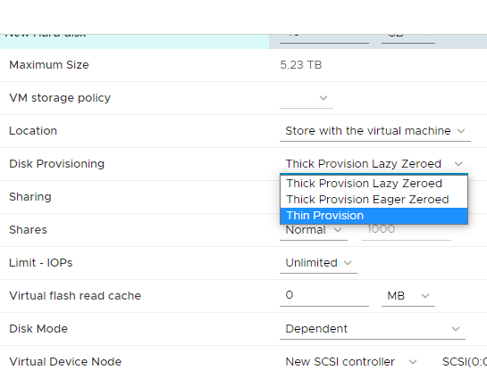Etter det går man inn på "VM options" øverst, går inn på "Boot options", og haker av på "Force EFI setup".
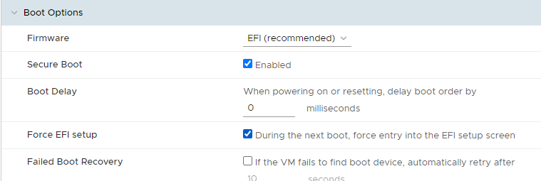Når man har gjort alt dette vil til slutt maskinen være synlig under elevpool-mappen og man kan begynne på kapittel 2.
Kapittel 2: Sette opp Windows server
Start maskinen ved å trykke på den grønne pilen øverst. Etter noen sekunder vil så "launch web console" knappen bli tilgjengelig. Trykk på den og velg "Web Console" for å komme inn på selve maskinen.
Hvis man har gjort alt i kapittel 1 riktig vil man komme inn på "Boot manager" når man åpner webkonsollen. Velg "EFI WMware Virtual SATA CDROM Drive" for å starte installasjonsprosessen.
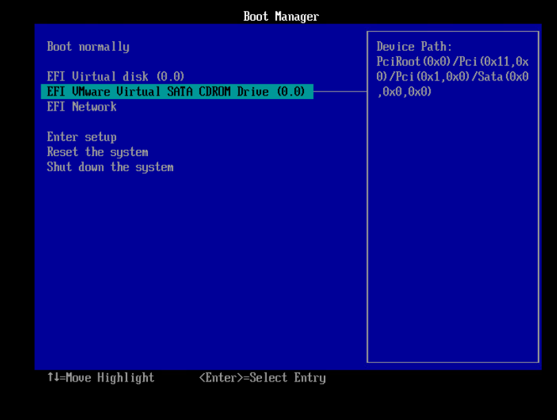Etter litt venting vil man få denne menyen, der man velger språkinstillingene for serveren. Her velger man det som er relevant for sin egen datamaskin.

Maskinen vil så spørre om en product key. Med mindre man faktisk har kjøpt en slik nøkkel (noe man ikke burde for virtuelle maskiner), så velger man bare "I don't have a produkt key". Etter det skal man velge versjonen av Windows server man vil installere. I denne guiden velger man "2019 Datacenter Desktop Experience", men hvis du er godt kjent med Windows server og liker å jobbe med en konsoll, kan man velge vanlig datacenter.
Så kommer noen lagringsrelaterte valg. Først vil maskinen spørre om man enten vil oppgradere versjonen man allerede har, eller om man vil gå for en custom install. Den førstnevnte instillingen er bare tilgjengelig hvis du allerede har en versjon av Windows installert på maskinen, som ikke er tilfellet her. Velg "Custom Install" og gå videre til hvor man vil installere windows, og her vil det bare være en enkelt plass å lagre maskinen på. Når man har gjort alt dette vil maskinen begynne å faktisk installere Windows, og dette kan ta en del tid.

Når Windows endelig har installert vil du bli spurt om å opprette et passord for administrator-brukeren. Her er det viktig at man lager et relativt sterkt passord, ettersom noen steg senere i guiden vil ikke la seg utføre hvis passordet er for svakt.

Når det er gjort er serveren klar til å brukes.

Kapittel 3: Sette opp server og brukere
Da er det på tide og begynne oppsettet for selve serveren. Aller først må man sjekke at alt er som det skal. Når serveren har nettop startet kan det hende at noen felter lengre ned på hovedmenyen er røde, men hvis man venter litt og refresher burde de fikse seg selv.
Når alt er klart på hovedmenyen går man til "Tools" øverst til høyre og finner fram til "Computer Management" på listen.
Inne på computer management gå til "Local Users and Groups", gå inn i "Users" mappen, høyreklikk og velg "New User".
For å opprette en ny bruker må man skrive inn et brukernavn, et "fullt navn", og et passord. Dette vil bli en klientbruker som man kan logge på maskinen med senere.
Høyreklikk så på brukeren du nettop har opprettet og velg "properties", "member of", og man får opp en enkel meny med en tekstboks nederst. Ikke fjern innholdet i tekstboksen, men skriv inn "Administrators" på slutten. Hvis det da kommer en understrek under teksten etter å ha trykket "check names", er verdien gyldig og man kan trykke på "ok" og "apply".
Når det er gjort, høyreklikk på Administrator-brukeren, velg "rename" og gi den et valgfritt navn. Etter det går man ut av "computer management" menyen og går til local server, der man trykker på "computer name".
I menyen som kommer opp, skriv inn et valgfritt navn under "computer name". Etter det, trykk på "more" og skriv inn en valgfri "DNS suffix" for serveren. Når man trykker ok vil maskinen fortelle at man må restarte, så før man går videre så restarter man serveren.
Etter å ha restartet er det på tide å koble til internett. Gå tilbake til Local Server og velg "Ethernet0".
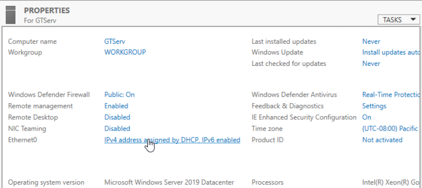Fra listen som kommer opp, velg "Internet Protocol Version 4(TCP/IPv4)" og trykk på properties.
Da vil man få opp denne menyen. Her skal man manuelt skrive inn IP-addresse, subnett-maske, default gateway og DNS server:
IP address: 10.12.elevpool-nummer.72
Subnet mask: 255.255.255.0
Default gateway: 10.12.elevpool-nummer.1
DNS server: 10.10.1.30
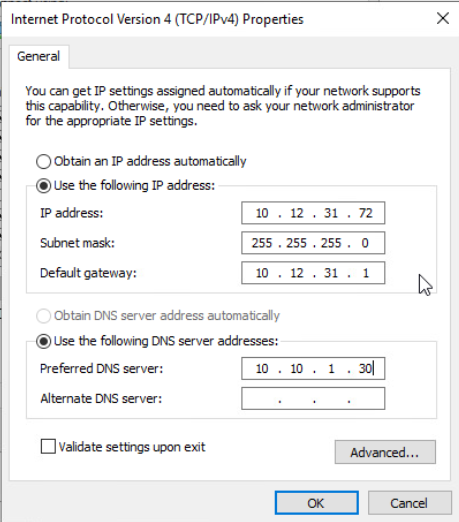
Når man trykker ok vil man få en melding om at man er koblet til internett, og på local server vil man se IP-adressen til serveren under Ethernet0.

Gå inn på Dashboard, "Add roles and features" og trykk next helt fram til "server roles", der man huker av for DNS Server.
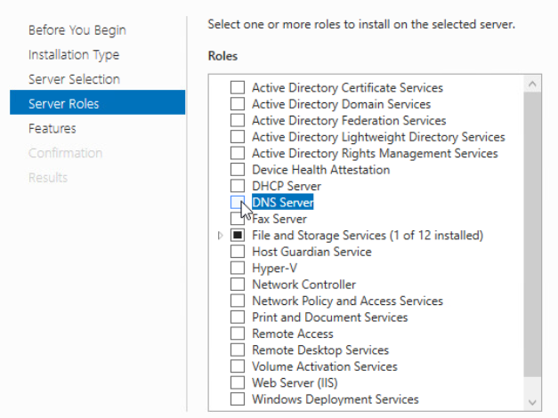Etter å ha huket av på DNS server vil det poppe opp et vindu som beskriver det du er i ferd med å installere. Trykk på "Add features" og trykk på next helt fram til "Confirmation" vinduet, der man trykker på Install. Serveren vil bruke opptil noen minutter på å installere, og når den er ferdig, kan man gå til kapittel 5.
Kapittel 4: Sette opp Active Directory Domain Services (AD DS)
For å installere AD DS, gå tilbake inn på Add roles and features, og huk av på Active Directory Domain Services. Kjør så samme prosess som sist gang, der man trykker på "Add features" og trykker next helt fram til man installerer.
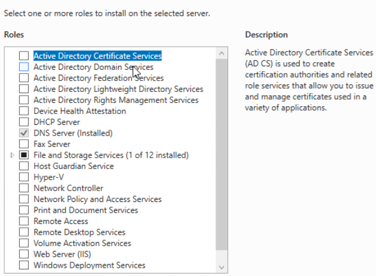Når AD DS er ferdig installert, vil man legge merke til at det er et advarselstegn på hovedmenyen. Gå til den nye AD DS-menyen til venstre, og trykk "more" på det gule advarselsbanneret øverst.
I menyen som kommer opp, vil man kunne se enda en advarselsmelding i den øverste boksen. Trykk på "Promote this server to a domain" og man får opp et vindu der man skal sette opp domenet. Først, velg "Add a new forest" og under Root domain name, skriv inn et valgfritt domenenavn med følgende format:
prefix.domenenavn.net
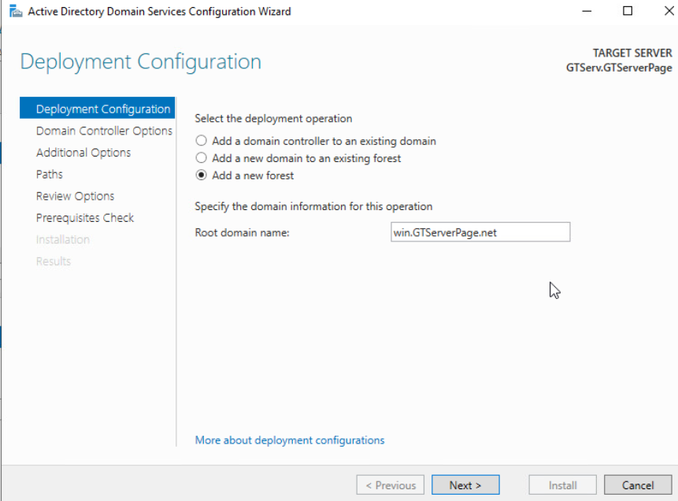
Så må man lage et "DSRM"-passord. Her er det viktig å ha et sterkt passord, ettersom et for svakt passord kan gjøre at maskinen hindrer deg fra å få satt alt opp.
Derfra trykker du "next" helt til "prerequisites check" og venter til maskinen har fått sjekket at alt er riktig. Hvis alt er riktig, trykk på install og vent til maskinen restarter.
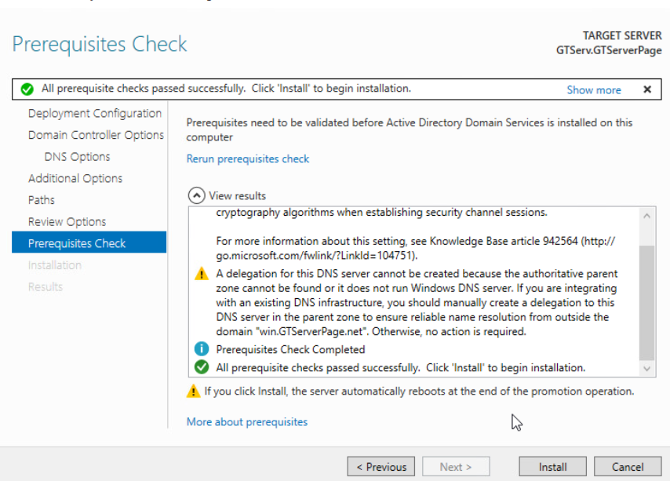Hvis det står "WIN" foran administrator-brukernavnet når maskinen har startet, er AD DS satt opp riktig og alt fungerer som det skal.
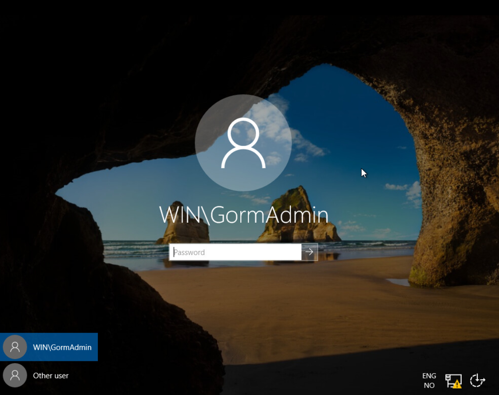Kapittel 5: Sette opp DHCP
Igjen, gå inn på "Add roles and features" og huk av for DHCP Server. Når DHCP er installert, vil det igjen komme opp en advarselsmelding på hovedmenyen.
Når DHCP er installert, vil det igjen komme opp en advarselsmelding på hovedmenyen. Åpne advarselen ved å trykke på flagget, og trykk på "Complete DHCP configuration".
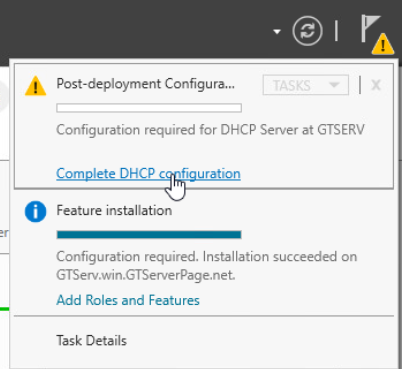Slik som på AD DS, trykk på "more" på advarselsbanneret øverst. I vinduet som kommer opp vil det være enda en advarselsmelding, der man trykker på "Complete DHCP configuration".
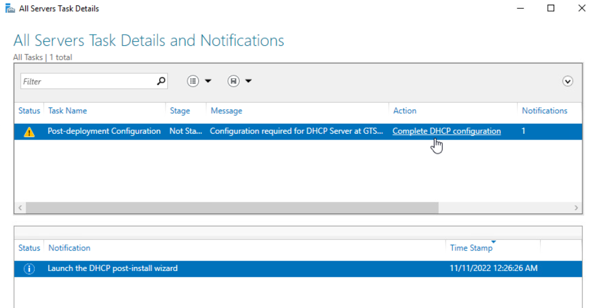I menyen som kommer opp, velg "Use the following user's credentials", og skriv inn navnet til Administrator-brukeren på serveren. Etter det, trykk commit.
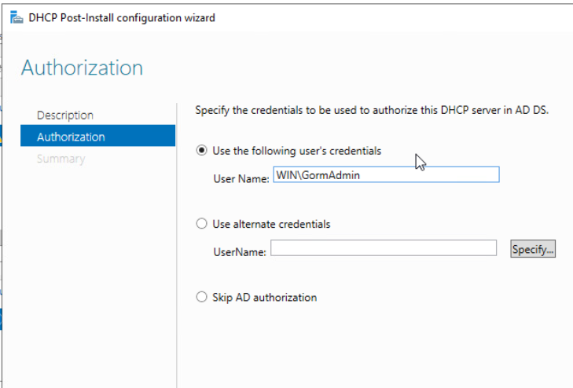Så går man tilbake til "tools" menyen, og velger DHCP fra listen. Da får man opp et vindu med oversikt over DHCP-instillingene. Velg IPv4 fra menyen til venstre, høyreklikk og velg "new scope".
Dette vil åpne en såkalt "wizard" for å sette opp et nytt scope. Først, under scope name, skriv inn et valgfritt navn for scopet.
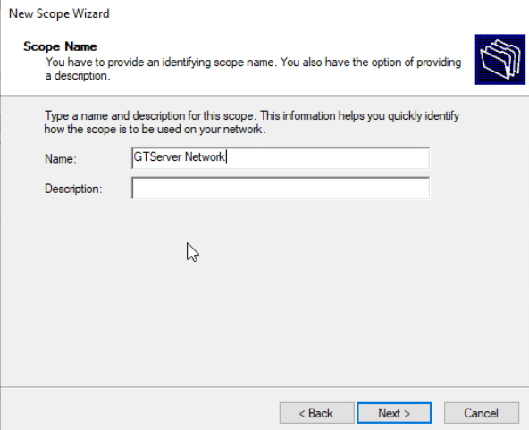Neste steg er å definere en "range" for scopet, altså antall IP-addresser på nettverket. Skriv inn følgende:
Start IP address: 10.12.elevpool-nummer.2
End IP address: 10.12.elevpool-nummer.254
Length: 24
Subnet mask: 255.255.255.0
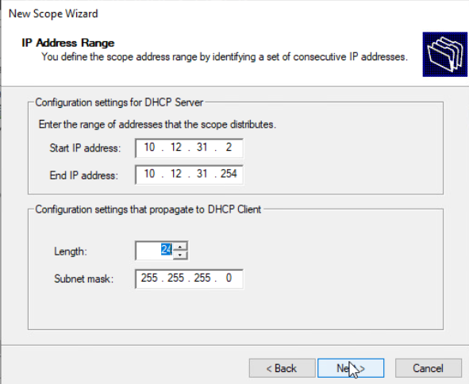
Etter det vil wizarden spørre om det er noen IP-addresser som man vil ekskludere. Dette steget hopper man over i denne guiden. Neste er Lease duration, der standard er 8 dager. Man trenger ikke endre dette, men man kan hvis man vil. Så er det configure DHCP options. Velg "Yes, I want to configure" og trykk next.

I Router (default gateway) skriv inn følgende:
10.12.elevpool-nummer.1
og trykk "add". Så trykk next.
Hvis domenet og IP-addressen til maskinen popper opp under "Domain name and DNS Servers", er alt gjort riktig. Trykk på next helt til slutten av wizarden, og trykk finish.
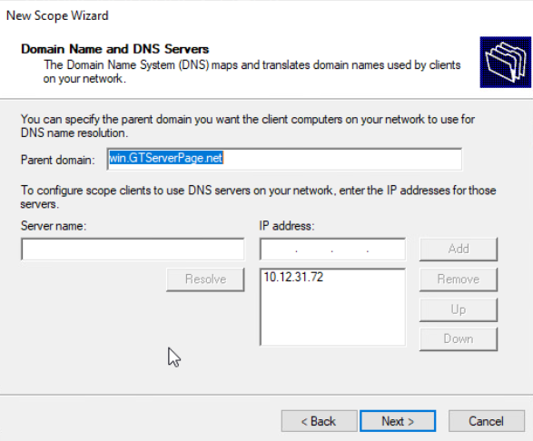Kapittel 6: Lage og sette opp klientmaskin
Opprett en ny maskin, akkurat som i kapittel 1. Når man skal velge operativsystem, så velger man "Windows 10(64-bit)" istedenfor Windows Server.
Fortsett helt fram til man velger ISO fil. Istedenfor å velge ISO filen for serveren, velger man den som heter "en_windows_10_multi". Når man har gjort det så følger man resten av guiden videre, helt fram til maskinen spør om hvilken versjon du vil installere. For denne guiden har det blitt brukt Windows 10 Pro, men Windows 10 Home burde også fungere.

Kapittel 7: Koble klientmaskinen til serveren
På klientmaskinen, gå inn på innstillinger, "Network & Internet", og change adapter options.
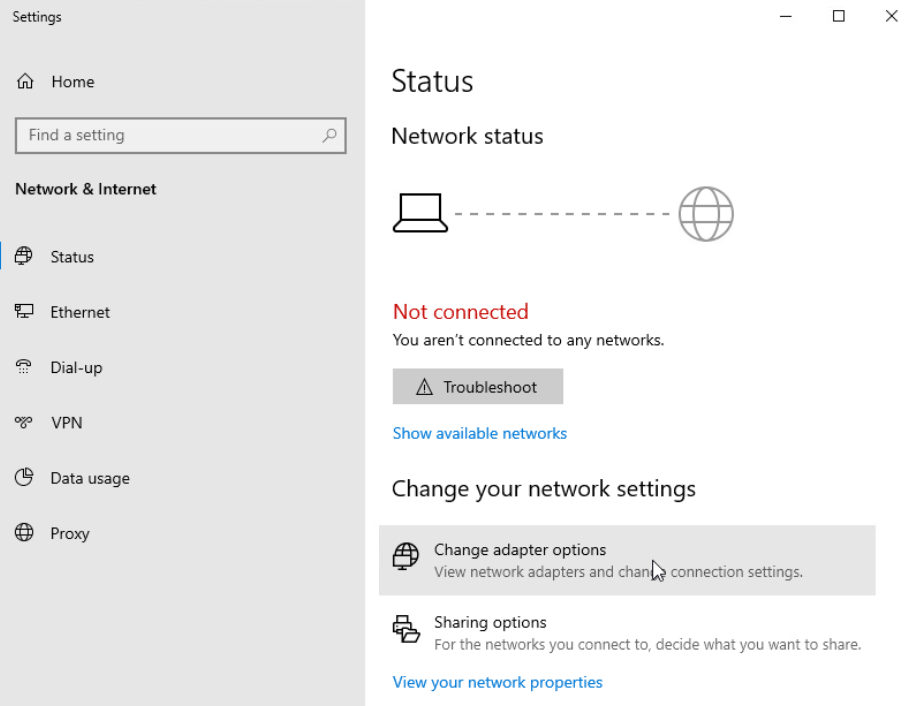Så høyreklikk på Ethernet0, og trykk på IPv4 og properties, akkurat som på serveren. Skriv inn følgende:
IP address: 10.12.elevpool-nummer.73
Subnet mask: 255.255.255.0
Default gateway: 10.12.elevpool-nummer.1
DNS server: 10.10.1.30

Etter det gå tilbake til settings, system og velg About nederst. Deretter velg "System Info" under Related settings og trykk "Change settings" på computer name.
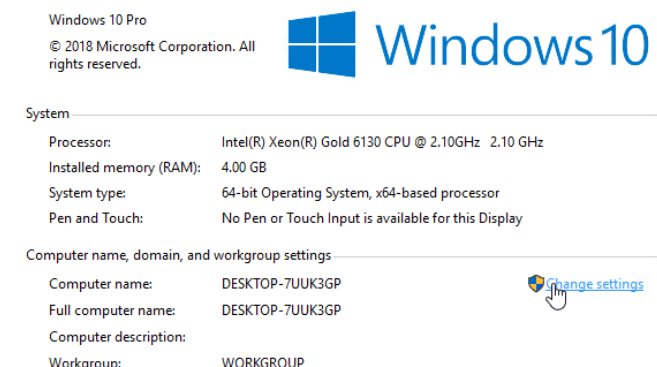I menyen som kommer opp, trykk "change" nederst og så skriver man inn domenenavnet som ble definert i kapittel 4.
Hvis alt fungerer som det skal, vil man få opp et felt for innlogging. Her skal man logge inn på adminbrukeren til serveren.
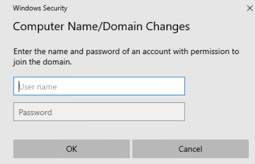Til slutt vil man få en melding som sier velkommen til domenet, og nettverksmenyen nederst vil vise domenenavnet til serveren. Serveren og klientmaskinen er nå koblet sammen. Restart så klientmaskinen (kan hende man må gjøre dette rett etter å ha logget inn også).

Kapittel 8: Sette opp IIS (Internet Information Services)
Gå tilbake til "Add roles and features", og denne gangen hak av på "Web server (IIS)" og FTP.
Før man trykker "Add features", huk av på "request filtering" og "basic authentication". Fortsett så gjennom prosessen som vanlig helt til det er installert.
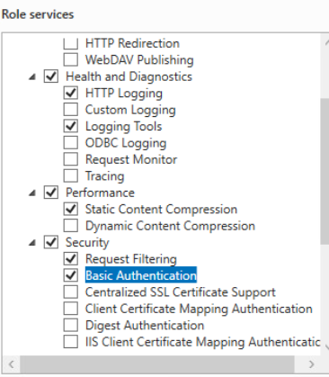Hvis man så går inn på nettleseren sin, kan man skrive inn IP-adressen til serveren og man vil få opp startsiden for IIS. Dette betyr at IIS fungerer som det skal.
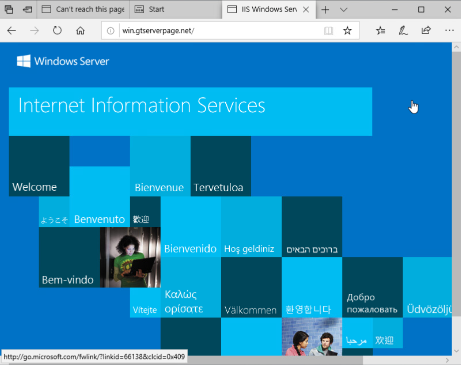Etter å ha sjekket at IIS fungerer, åpne søkefeltet på serveren og søk opp IIS manager.
Inne i IIS manager, gå inn på mappen med navnet til administrator-brukeren, så inn i mappen sites, høyreklikk på "default web site" og velg "Add FTP Publishing".
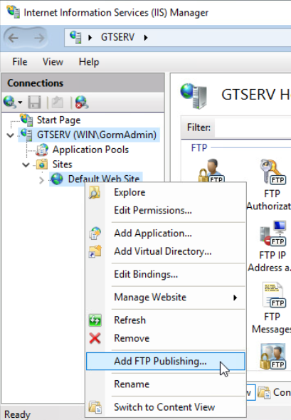Først må man skrive inn IP-adressen til serveren, og velge en port. Nederst velg "No SSL". Så må man sette opp for hvem som kan koble til eller ikke. Gi tilgang for både Anonymous og Basic, og la "Authorization" bli på "not selected" (Hvis det ikke funker, så prøv noen av de andre valgene). Når det er ferdig trykk finish, og restart serveren.
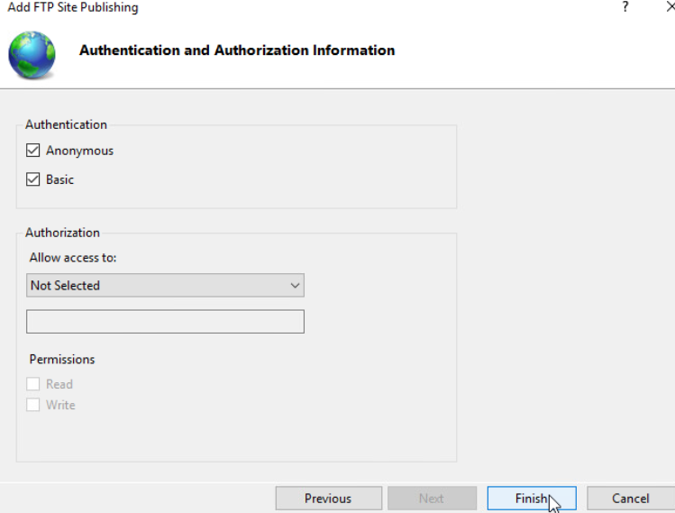Kapittel 9: Legge inn HTML
Video som forklarer prosessen med å legge inn HTML:

Til å begynne med må man installere et program som heter FileZilla. Det er et program som gjør overføring av filer gjenomm FTP mye enklere. Gå til FileZilla sin nettside og velg "Download FileZilla Client". Etter å ha fullført installasjons-wizarden, gå inn på FileZilla og trykk på "connect" øverst til venstre. Man vil da få opp tjeneroppsett-vinduet, hvor man legger til serveren. Velg "FTP" under protokoll, skriv inn IP-en og porten til serveren, og velg anonym innloggingstype.
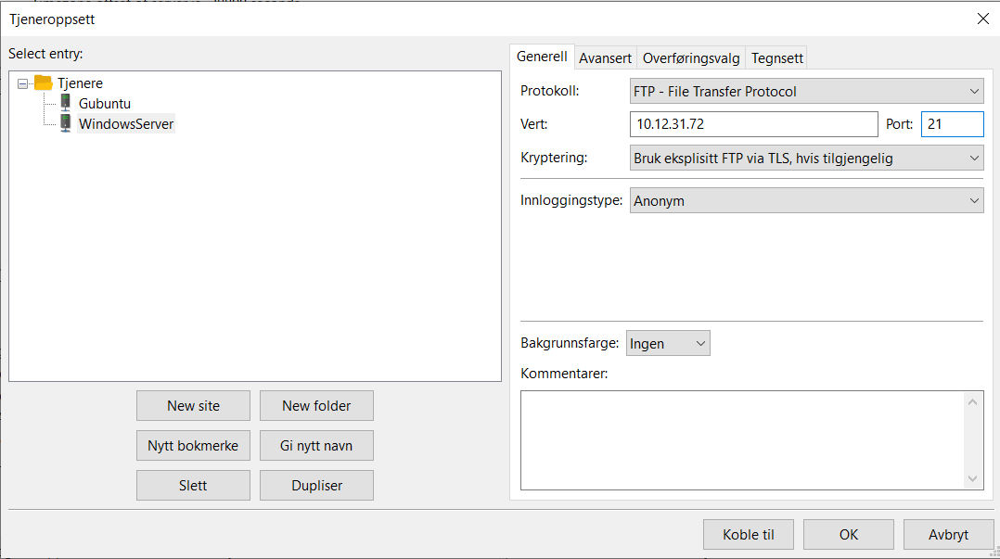Når alt er skrevet inn trykk på "koble til" og hvis alt er gjort riktig, vil man til slutt se mappen der nettsiden til serveren er lagret. Dermed er å legge inn egen HTML så enkelt som å dra filene man vil ha på serveren inn i vinduet nederst til høyre og de vil vises på serverens nettside (husk å fjerne filene som allerede er der).
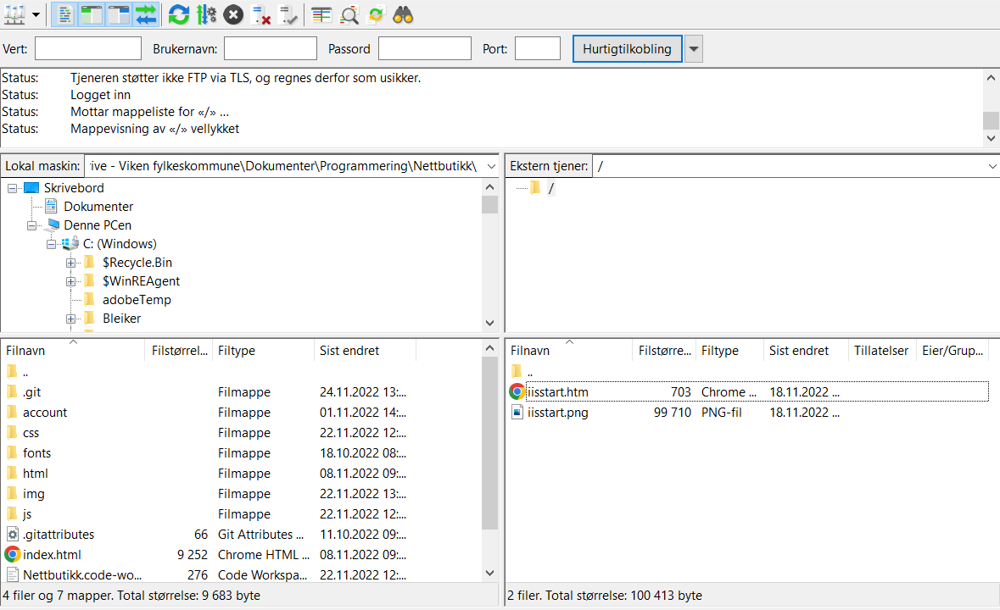